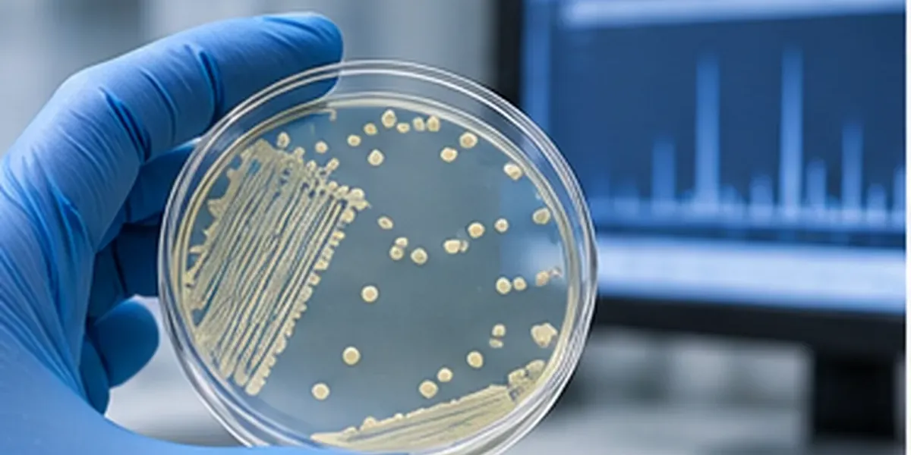
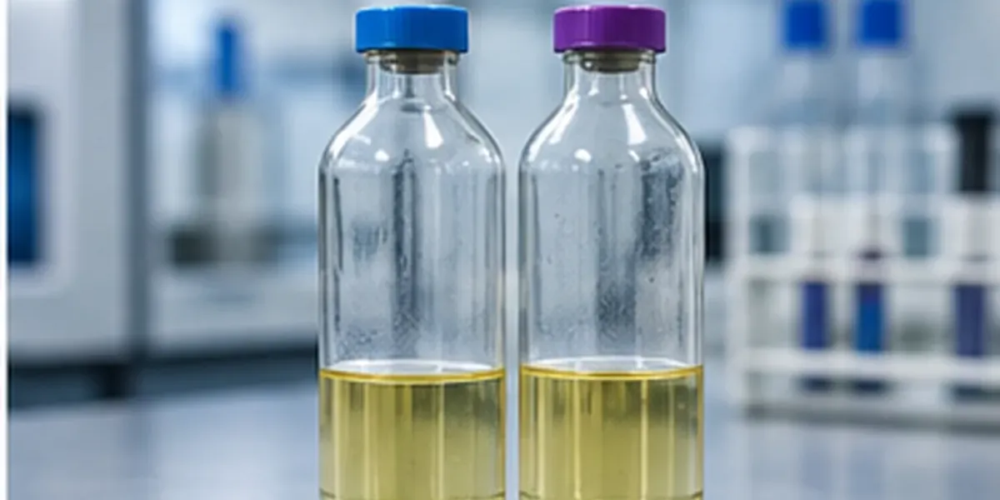

1. Entender
Mapeamos o volume, fluxo e objetivo do laboratório.
O MALDI-TOF entra como uma solução de tecnologia dentro do portfólio da RBio, com foco em identificação e agilidade na rotina microbiológica.

A proposta comercial não é vender apenas um equipamento, mas integrar a tecnologia à necessidade do laboratório, considerando fluxo, volume, aplicações e infraestrutura.

A biblioteca cobre os grupos encontrados na rotina clínica e no controle de qualidade industrial. Alguns exemplos:
Exemplos ilustrativos. A cobertura da biblioteca depende da versão do software e deve ser confirmada para cada aplicação.
A RBio atua na representação comercial e na construção da solução com o cliente, conectando a tecnologia ao contexto da operação.
Mapeamos o volume, fluxo e objetivo do laboratório.
Avaliamos a solução e os consumíveis relacionados à rotina.
Acompanhamos a negociação, a implantação e o relacionamento depois da instalação.
O projeto pode ser relacionado a outras frentes do portfólio, como hemocultura, testes rápidos e consumíveis de microbiologia.
Ver diagnóstico clínico →
Envie o perfil da sua rotina e a RBio entra em contato.